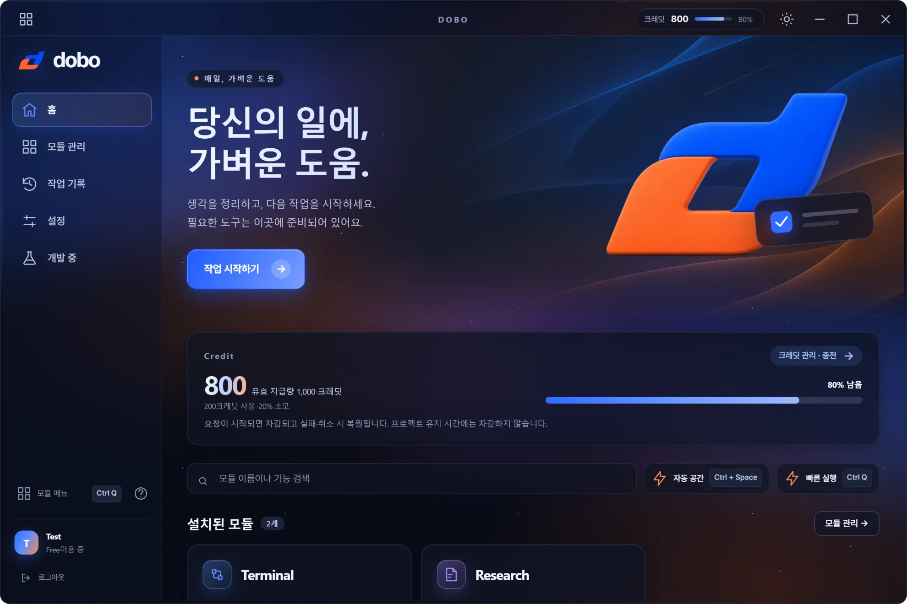
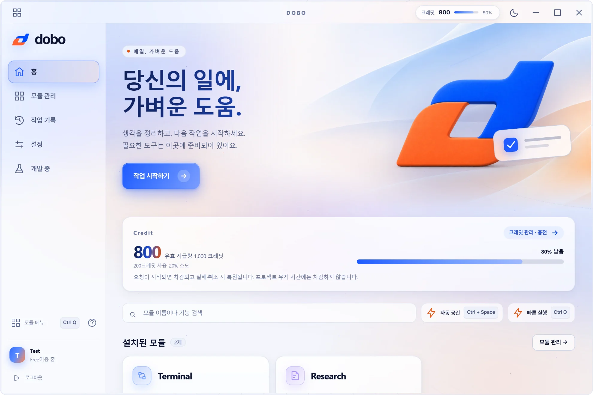
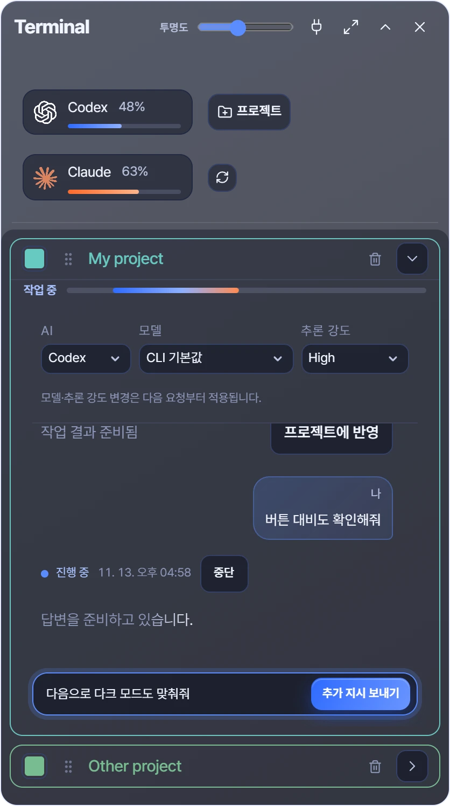
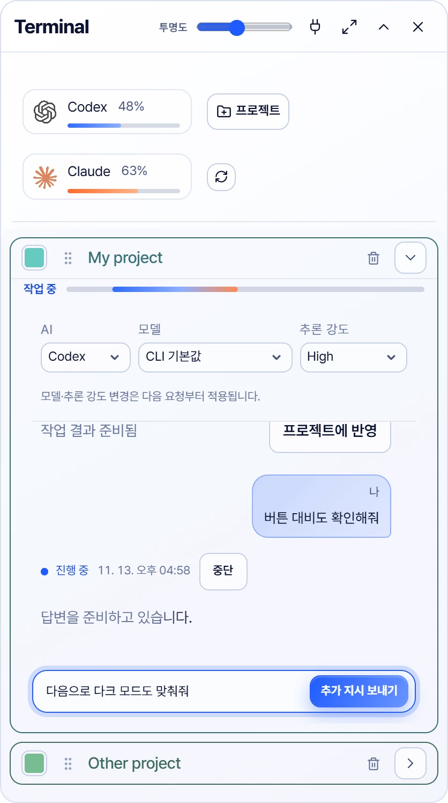
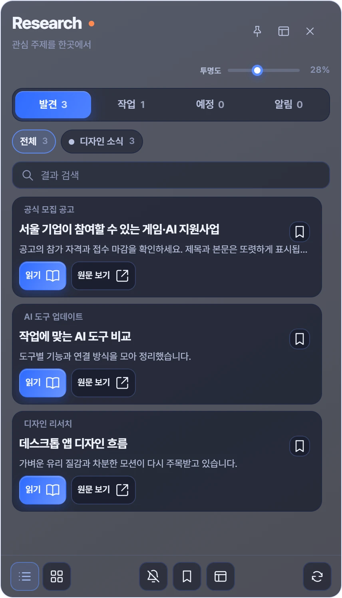
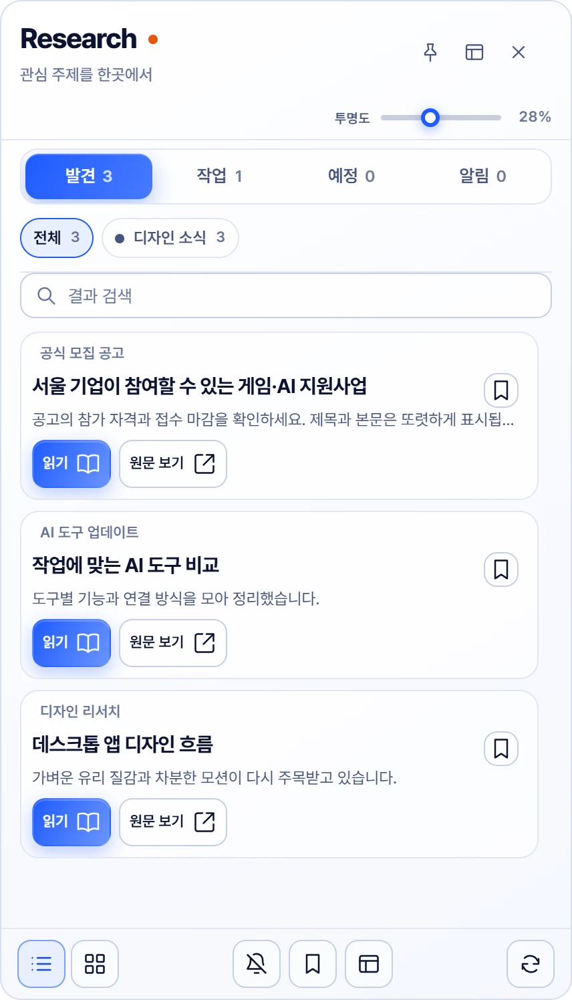

De retour là où vous étiez.
Fermez l’application : vos conversations et votre historique de travail restent. Rouvrez-la et continuez au même endroit.


A LITTLE HELP. A NEW POSSIBILITY.
Reprenez exactement là où vous vous étiez arrêté.
Vos conversations et leur contexte restent : inutile de tout réexpliquer.
Un travail qui ne perd pas le fil
Fermez l’application : vos conversations et votre historique de travail restent. Rouvrez-la et continuez au même endroit.


Chaque projet garde sa propre conversation : le contexte ne se mélange pas quand vous passez d’une tâche à l’autre.


Vos recherches et vos anciens résultats ne disparaissent pas. Retrouvez-les et continuez quand vous en avez besoin.


SMALL START. REAL WORK.
From installation to your first task, in three steps.
Des crédits de base sont attribués à la création du compte.
An easy first stepOuvrez un projet et demandez à l’IA.
Made for your workflowRouvrez-la et elle reprend là où vous étiez.
One step at a timeA LITTLE MORE ROOM TO WORK
Add the credits you need for the tools you use.
Attribués à l’inscription · puis tous les 30 jours
About 600 requests if used only for Terminal
Commencer sans enregistrer de carte
Les crédits gratuits sont valables 30 jours après leur attribution.
Utilisés avec les crédits de base
Aucune limite sur le nombre de tâches Research
Renouvellement automatique · résiliable depuis votre compte
Les crédits supplémentaires sont valables jusqu’à la fin de la période de paiement concernée.
$4.99 / $9.99 / $19.99
A one-time purchase for what you need
Valable 365 jours à compter de la date de paiement
Can be combined with a monthly subscription
Tous les prix sont indiqués en USD. L’attribution de base est appliquée lors de la connexion au compte ; les périodes sans connexion ne sont pas cumulées rétroactivement.
Quelques réponses avant de démarrer avec DOBO.
Créez un compte sans ajouter de carte et essayez les outils dont vous avez besoin avec vos crédits de base.
Terminal, Auto Space et Present AI nécessitent un compte CLI ou API connecté.
Research fonctionne sans clé API supplémentaire.
Ajoutez les sujets qui vous intéressent pour rassembler les résultats de recherche. Lisez les points clés et consultez les sources pour plus de détails.
Dans Mon compte, consultez votre solde de crédits et votre historique de paiements, rechargez vos crédits et gérez votre abonnement.
Nous prévoyons de proposer une nouvelle fonctionnalité chaque mois.
LINGO is in development. It will be available when it is ready.
Nous prévoyons de proposer une nouvelle fonctionnalité chaque mois.
MAKE ROOM FOR YOUR NEXT IDEA
Just the AI you need, right at your desk.
Choisissez le fichier d’installation adapté à votre ordinateur.
Sur votre téléphone, consultez les fonctionnalités et les tarifs ; effectuez l’installation sur votre ordinateur.
Vérification des installateurs